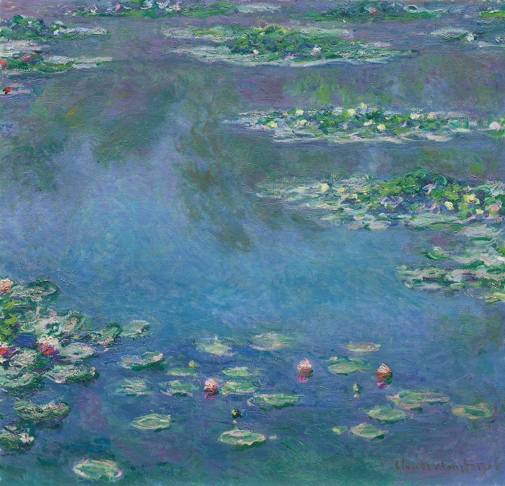

Water Lilies

Palette
- Payne's grey · your word: Slate
- Steel blue · your word: Steel blue
- Myrtle green · your word: Teal
- Denim · your word: Denim
- Grey · your word: Grey
- Viridian · your word: Viridian
One of about 250 water-lily paintings, from a group made in 1903–08. The near-square canvas shows only the pond's surface: no bank and no horizon, just reflected sky and lily pads. In 1905 Monet listed his palette as lead white, cadmium yellow, vermilion, deep madder, cobalt blue and viridian, and nothing else. His cataract trouble came later (he was diagnosed in 1912), so it doesn't explain these colors.
Image
Wikimedia Commons · Public domain

Hex values are screen approximations. Every page lists its sources.